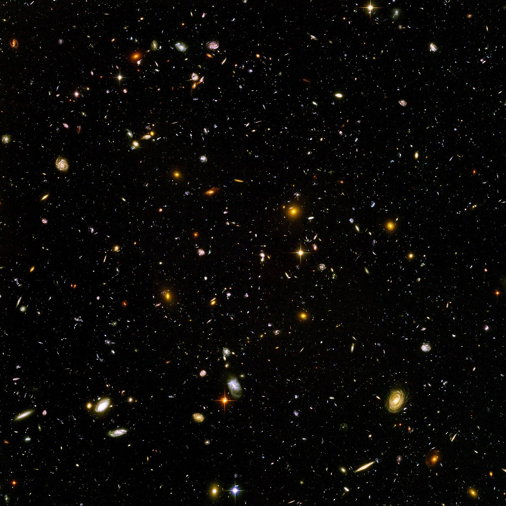
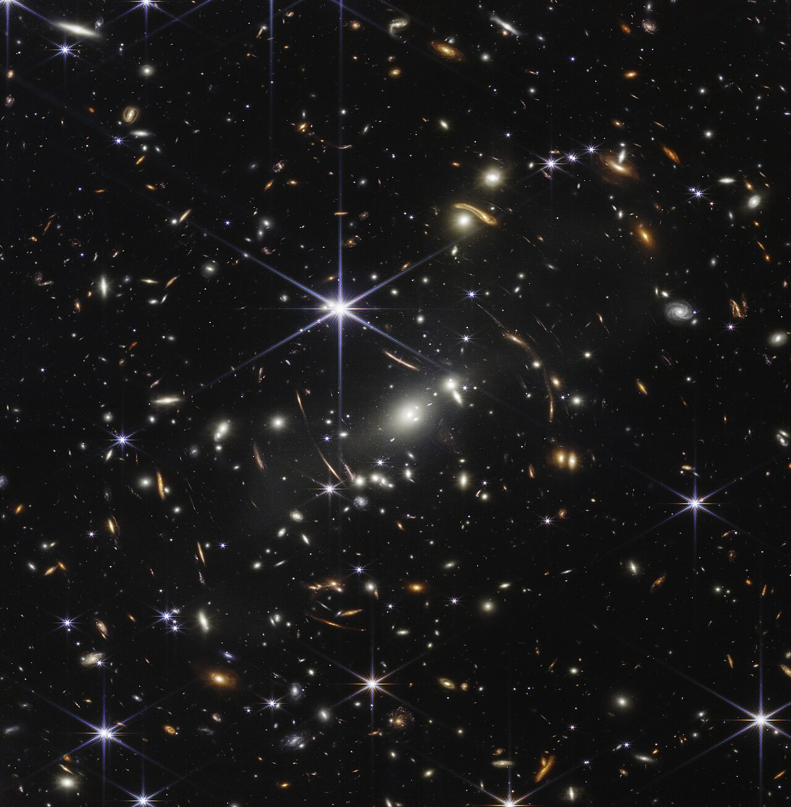
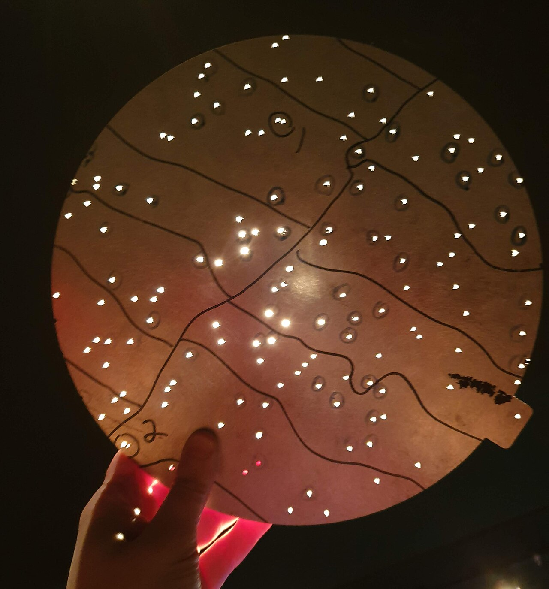
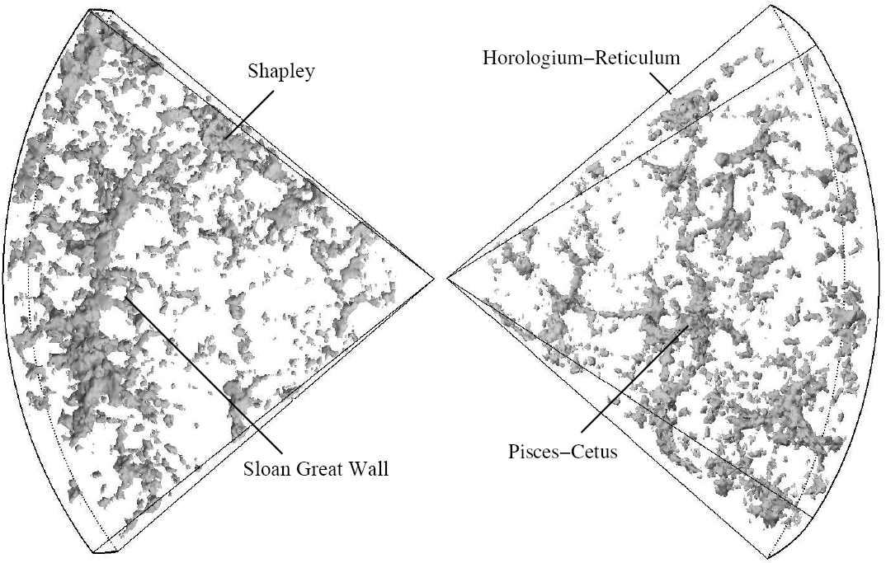

동기 유발
사진 한 장에 은하 1만 개
교과서 p. 98학습 목표
- 대규모로 이루어진 외부 은하의 적색 편이 탐사의 성과를 설명할 수 있다.
- 은하의 공간 분포를 파악하는 데 분광 관측 자료의 중요성을 설명할 수 있다.

NASA, ESA, S. Beckwith (STScI) and the HUDF Team

NASA, ESA, CSA, STScI
사진 속 은하들은 하늘에 고르게 흩어진 것처럼 보인다.
그렇다면 실제 3차원 우주에서도 은하들은 고르게 퍼져 있을까? 사진만으로 그것을 알 수 있을까?
그렇다면 실제 3차원 우주에서도 은하들은 고르게 퍼져 있을까? 사진만으로 그것을 알 수 있을까?
사진은 '방향'만 알려 주고 '깊이(거리)'는 알려 주지 않는다는 점이 핵심입니다. 시뮬레이션 2(2D 하늘 vs 3D 공간)로 바로 확인하게 하면 좋습니다. 운영안 3차시(적색 편이 1 / 탐사의 역사·성과 1 / 데이터 탐구 1).
핵심 개념 1
분광 관측으로 은하까지의 거리 재기
교과서 p. 98적색 편이와 허블 법칙
- 외부 은하의 스펙트럼에서 흡수선·방출선은 대부분 파장이 긴 쪽(붉은 쪽)으로 이동해 있다 → 적색 편이
- 적색 편이 z = Δλ/λ₀. z가 작을 때 은하의 후퇴 속도 v ≈ cz
- 허블 법칙: 멀리 있는 은하일수록 빨리 멀어진다(v = H₀ d). 우주가 팽창하기 때문이다. → 적색 편이만 재면 거리를 알 수 있다.
- 하늘의 위치(적경·적위) + 적색 편이(거리) = 은하의 3차원 위치. 이것이 우주 지도를 그리는 원리이다.
z = λ − λ₀λ₀ , v ≈ cz , d = vH₀ H₀ ≈ 70 km/s/Mpc (허블 상수). z가 크면 상대론적 효과와 우주 팽창의 역사를 고려해야 한다.
시뮬레이션 1은하 스펙트럼의 적색 편이 측정하기
위: 실험실 기준 스펙트럼(정지 상태)의 주요 선 위치를 내 추정 z만큼 옮긴 것(점선). 아래: 관측된 은하 스펙트럼. 점선이 관측된 흡수·방출선(Ca Ⅱ K·H, Hβ, Mg, Na, Hα)과 겹치도록 z를 맞춰 보자.
핵심 개념 2
대규모 적색 편이 탐사와 그 성과
교과서 p. 99 ~ 100(1) 우주 지도를 그린 탐사들
| 탐사 | 시기 | 규모 | 성과 |
|---|---|---|---|
| CfA 적색 편이 탐사 | 1977 ~ 1995 | 약 1만 8천 개 | 은하들이 '거품' 표면에 모여 있음을 발견. CfA 장성(은하 장성), 거대 공동 |
| 2dF 적색 편이 탐사 | 1997 ~ 2002 | 약 22만 개 | 더 먼 곳까지 필라멘트·공동 구조 확인 |
| 슬로운 디지털 전천 탐사(SDSS) | 2000 ~ | 수백만 개 스펙트럼 | 하늘의 1/3 이상 3차원 지도, 슬로운 장성(약 4억 광년 이상), 바리온 음향 진동 |
| DESI | 2021 ~ | 목표 4천만 개 이상 | 110억 년 전까지의 우주 지도, 암흑 에너지 연구 |
- 전천 탐사: 하늘의 넓은 영역(또는 전체)을 체계적으로 관측하는 것. 측광(사진) 탐사로 은하를 찾고, 분광 탐사로 적색 편이(거리)를 잰다.
- 수백 개의 광섬유를 한꺼번에 꽂아(SDSS 플러그 판) 또는 로봇으로 배치해(DESI 5000개) 많은 은하의 스펙트럼을 동시에 얻는다.

Drkirstyross, CC BY-SA 4.0

Willem Schaap (2dFGRS 자료 재구성), CC BY-SA 3.0
(2) 왜 분광 관측이 꼭 필요할까?
- 사진(측광)은 은하의 하늘 위 위치만 알려 준다. 가까운 은하와 먼 은하가 겹쳐 보여 실제 구조가 지워진다.
- 분광으로 적색 편이를 재야 깊이(거리)가 생겨 장성·필라멘트·공동이 드러난다.
시뮬레이션 22D 하늘 사진 vs 3D 우주 지도
0°: 지구에서 본 하늘(모든 은하가 한 평면에 겹쳐 보임). 90°: 옆에서 본 모습(적색 편이로 거리를 알 때). 각도를 돌리면서 숨어 있던 거대 공동과 필라멘트가 언제 드러나는지 보자.
데이터 탐구
적색 편이 목록으로 나만의 '쐐기 지도' 만들기
탐구 개요
SDSS 분광 탐사 방식을 본뜬 은하 목록(적경, 적위, 적색 편이, 겉보기 등급)이 있다. 이 표를 ① 허블 법칙으로 거리로 바꾸고, ② 얇은 적위 띠만 잘라 적경–거리 쐐기 지도로 그려서 우주거대구조를 찾아본다. 마지막으로 먼 곳의 은하가 적어 보이는 까닭(선택 효과)을 분석한다.
하늘 지도적경–적위로만 그린 2D 지도에서 구조가 보이는가?
거리 계산 · 쐐기 지도d = cz / H₀로 거리를 계산하고, 적위 띠(슬라이스)를 골라 부채꼴(극좌표)로 그린다.
구조 찾기은하 장성(벽), 필라멘트, 거대 공동을 찾아 표시하고, 공동의 크기를 Mpc로 어림한다. 띠 두께를 바꾸면 무엇이 달라지는가?
선택 효과거리별 은하 수 히스토그램을 보고, 먼 곳에 은하가 적은 까닭을 '겉보기 등급 한계'로 설명한다.
데이터 랩모의 적색 편이 탐사 목록 · 쐐기 지도
쐐기 지도의 중심(꼭짓점)이 우리은하, 각도는 적경, 반지름은 거리이다. 모의 목록은 겉보기 등급 17.7등급보다 밝은 은하만 담았다(SDSS 주 표본의 한계와 같음). 실제 SDSS 자료는 SkyServer에서 SQL로 내려받을 수 있다.
분석 질문
1. 하늘 지도와 쐐기 지도를 비교해 보자. 분광 관측(적색 편이)이 왜 필요한가?
하늘 지도에서는 은하가 대체로 고르게 흩어져 보이고 몇 개의 진한 덩어리(은하단)만 보인다. 쐐기 지도에서는 은하들이 벽·실 모양으로 이어지고 그 사이에 은하가 거의 없는 거대 공동이 뚜렷하다. 거리 정보 없이 투영하면 앞뒤 구조가 겹쳐 지워지므로, 3차원 구조를 알려면 분광 관측이 꼭 필요하다.
2. 쐐기 지도에서 가장 큰 공동의 지름은 약 몇 Mpc인가? 띠 두께를 아주 두껍게 하면 어떻게 되는가?
큰 공동은 지름 약 30 ~ 50 Mpc(1억 ~ 1.6억 광년) 정도이다. 띠를 두껍게 하면 다른 깊이(적위)의 구조가 겹쳐 공동이 메워지고 구조가 흐려진다(2D 투영과 같은 문제). 얇게 하면 구조는 선명하지만 은하 수가 적어진다.
3. 거리 분포 히스토그램에서 약 150 Mpc 이후 은하 수가 줄어드는 까닭은? 이 자료로 '먼 우주에는 은하가 적다'고 결론 내려도 될까?
겉보기 등급 17.7등급보다 밝은 은하만 관측 목록에 들어가므로, 먼 곳에서는 아주 밝은 은하만 남는다(선택 효과, 맘퀴스트 편향). 실제로 은하가 적은 것이 아니므로 그렇게 결론 내리면 안 된다. 같은 절대 등급 이상인 은하만 골라(부피 제한 표본) 비교해야 공정하다.
4. H₀를 50과 90으로 바꾸면 지도는 어떻게 변하는가? 구조의 '모양'은 변하는가?
H₀가 작으면 같은 z에 대해 거리가 커져 지도 전체가 비례해서 커지고, H₀가 크면 작아진다. 구조의 모양과 상대적 위치는 그대로이고 크기 눈금만 바뀐다. 따라서 H₀를 정확히 알아야 공동·장성의 실제 크기를 말할 수 있다.
형성 평가
개념 확인 문제
그림·자료 출처
사진: NASA, ESA, CSA, STScI, 2dFGRS Team, Wikimedia Commons. 쐐기 지도 탐구의 은하 목록은 보로노이 우주 그물 모형과 SDSS 등급 한계로 만든 교육용 모의 자료입니다. 시뮬레이션은 직접 만들었습니다.